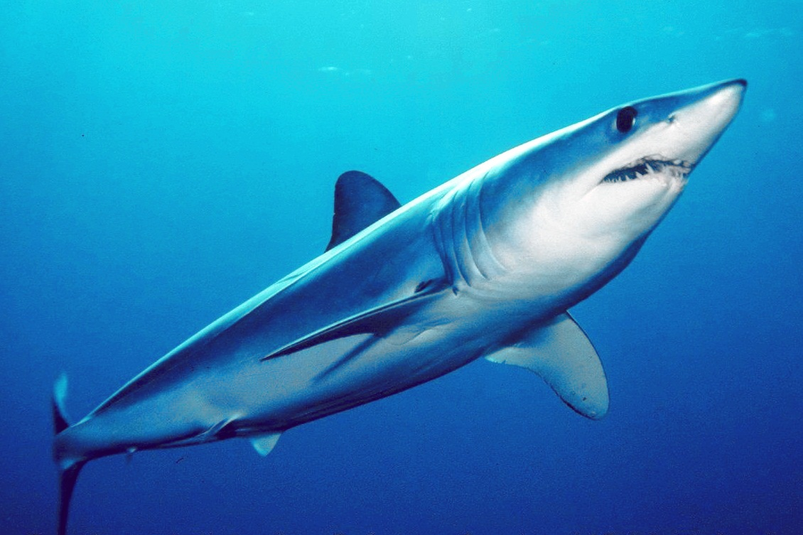

Los tiburones son fascinantes depredadores marinos, pero algunos pueden representar un mayor riesgo para los humanos debido a su tamaño, comportamiento y hábitats.
El tiburón blanco es posiblemente el tiburón más temido debido a su tamaño, fuerza y frecuencia de ataques. Puede llegar a medir más de 6 metros de longitud y se encuentra en aguas cálidas y templadas de todo el mundo.

El tiburón tigre es conocido por su agresividad y se encuentra en aguas tropicales y subtropicales de todo el mundo. Puede crecer hasta aproximadamente 5 metros de longitud y es responsable de una cantidad significativa de ataques a humanos.
Este tiburón habita en aguas tropicales y subtropicales alrededor del mundo y es conocido por su comportamiento territorial y agresivo. A menudo se encuentra en áreas cercanas a la costa y en estuarios.
Los tiburones mako, especialmente el tiburón mako común y el tiburón mako de aleta larga, son rápidos y ágiles, lo que los hace peligrosos para los nadadores y buceadores. Pueden alcanzar velocidades de hasta 60 km/h y se encuentran en aguas templadas y tropicales.
Los tiburones martillo son conocidos por su cabeza distintiva en forma de martillo. Varios tipos de tiburones martillo pueden representar un riesgo para los humanos, incluido el tiburón martillo común y el tiburón martillo gigante. Se encuentran en aguas tropicales y templadas de todo el mundo.
A continuacion algunos datos curiosos de animales acuáticos
-Algunas especies de tiburones realizan migraciones impresionantes a lo largo de sus vidas.
-Aunque la longevidad de los tiburones varía según la especie, algunos tiburones pueden vivir mucho tiempo. Por ejemplo, se ha registrado que el tiburón de Groenlandia puede vivir más de 400 años, convirtiéndolo en el vertebrado más longevo del mundo.
-Los tiburones tienen sentidos muy desarrollados que les ayudan a detectar presas en el agua.
-Los tiburones tienen múltiples filas de dientes dispuestos en forma de sierra. Lo más interesante es que estos dientes están constantemente siendo reemplazados a lo largo de su vida.